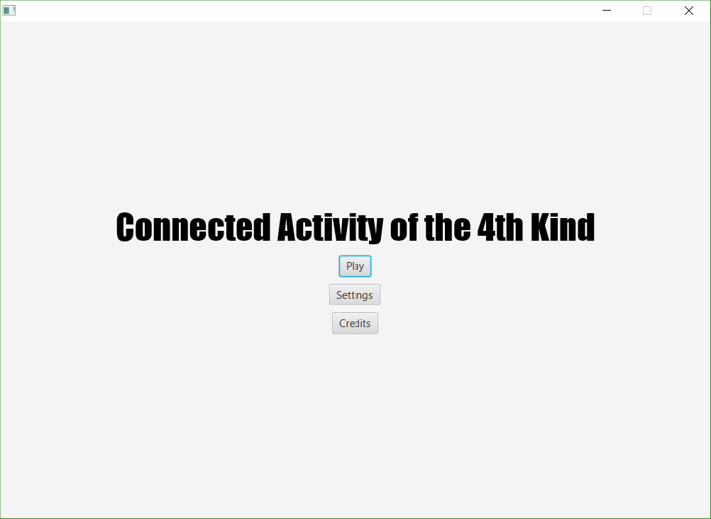
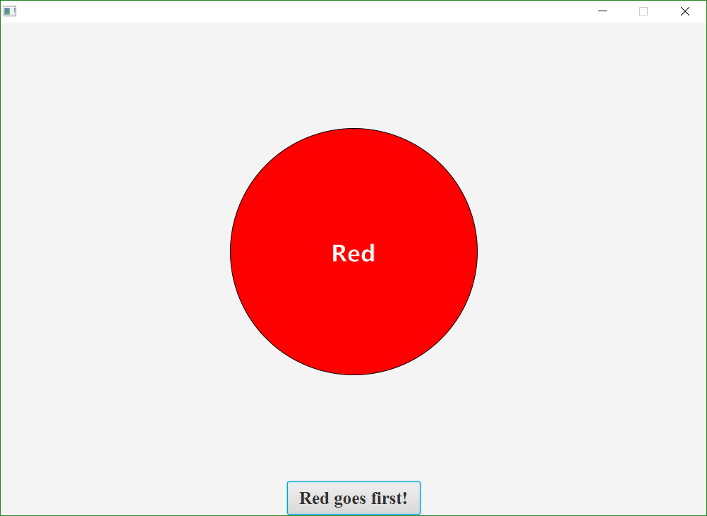

Connected Activity of the Fourth Kind
Connected Activity of the Fourth Kind is the first major group project I have ever done. It was
essentially just a Connect Four clone that I and two others created using Java. While my two partners were
in charge of creating the main menu and the spinning coin that determines who goes first, I took charge of
making the game itself. At the time, I was very proud of how I had managed to calculate whether someone had
made a Connect Four without just checking every possible win condition on the board. However, once we saw the
presentations of the other groups, we quickly realized that we had put in the least effort compared to them.
After that, we decided that on the next project we would give it our all.

